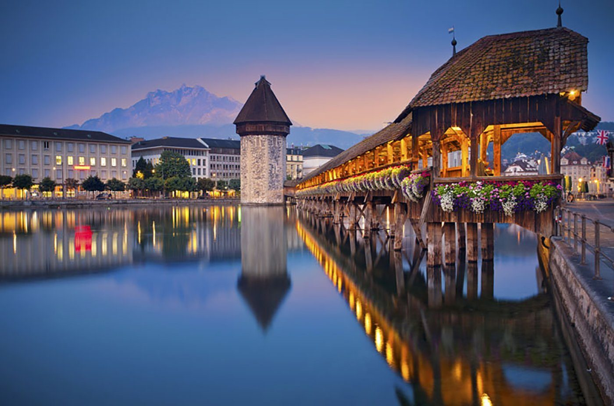
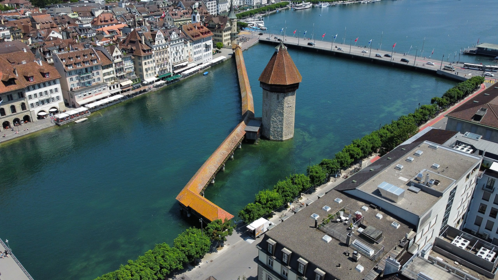
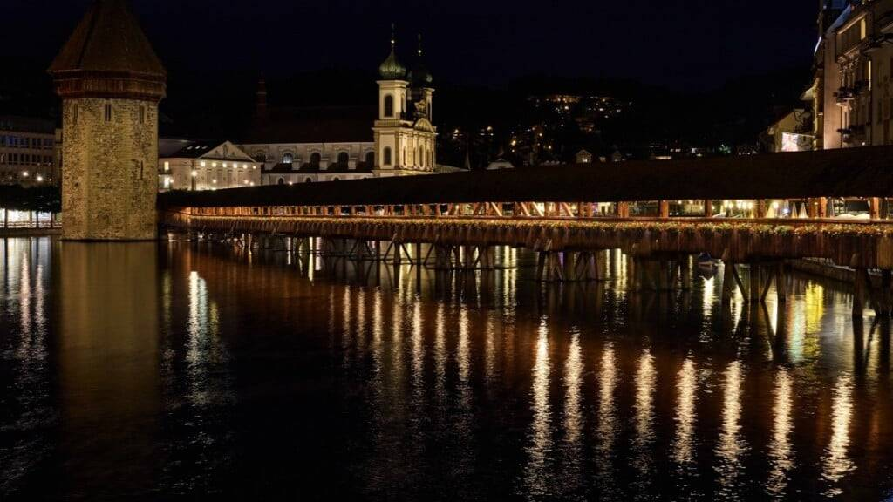

The Kapellbrücke, or Chapel Bridge, is Lucerne’s most famous landmark and one of Europe’s oldest wooden bridges. Built in 1333, it spans the Reuss River with timeless charm, connecting the city’s old and new towns in a single graceful arc.
Inside the covered walkway, a series of triangular paintings from the 17th century tell Lucerne’s story — scenes of battles, saints, and legends that shaped the city’s identity. Each painting adds a layer of history, turning every step across the bridge into a journey through time.
Next to the bridge stands the Wasserturm (Water Tower), once used as a watchtower, prison, and treasury. Though much of the bridge was damaged by fire in 1993, it was carefully restored to its original form, preserving its spirit and historical beauty.
